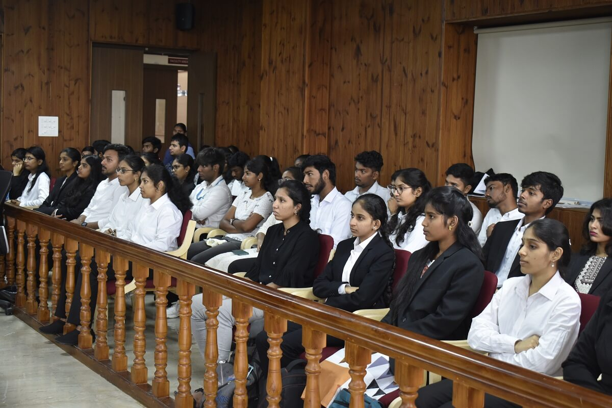
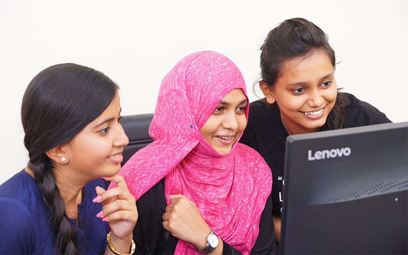
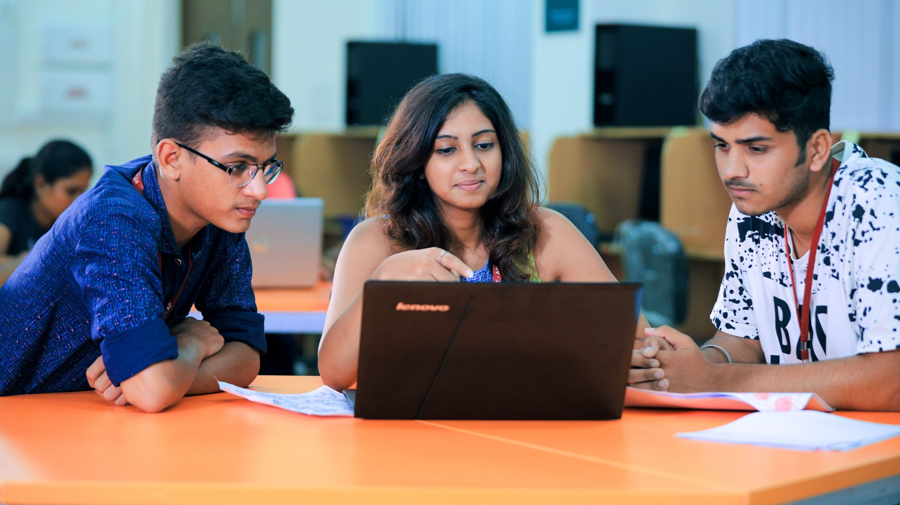
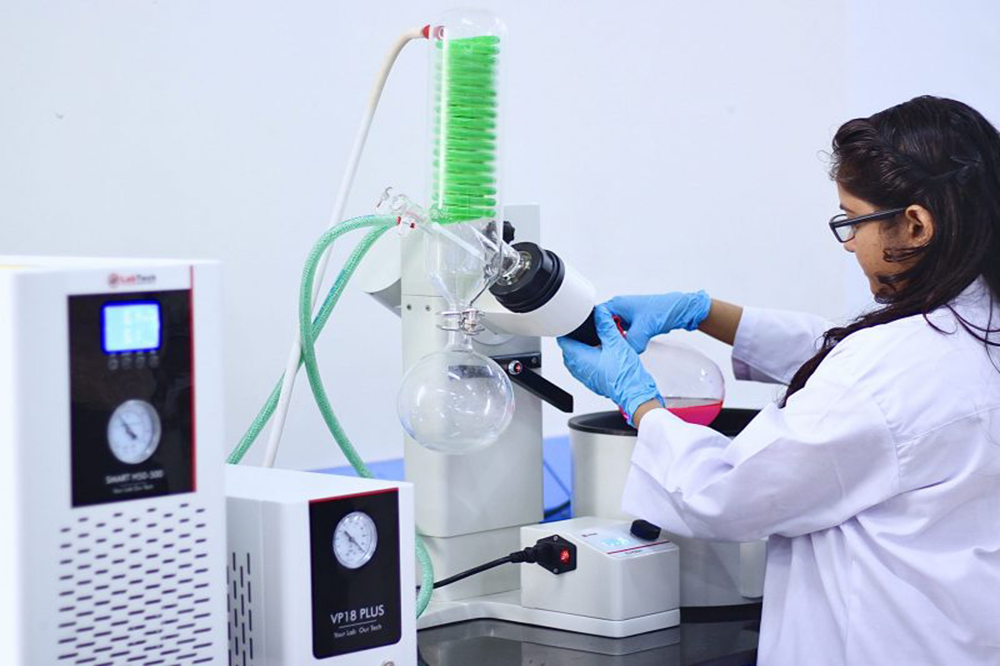
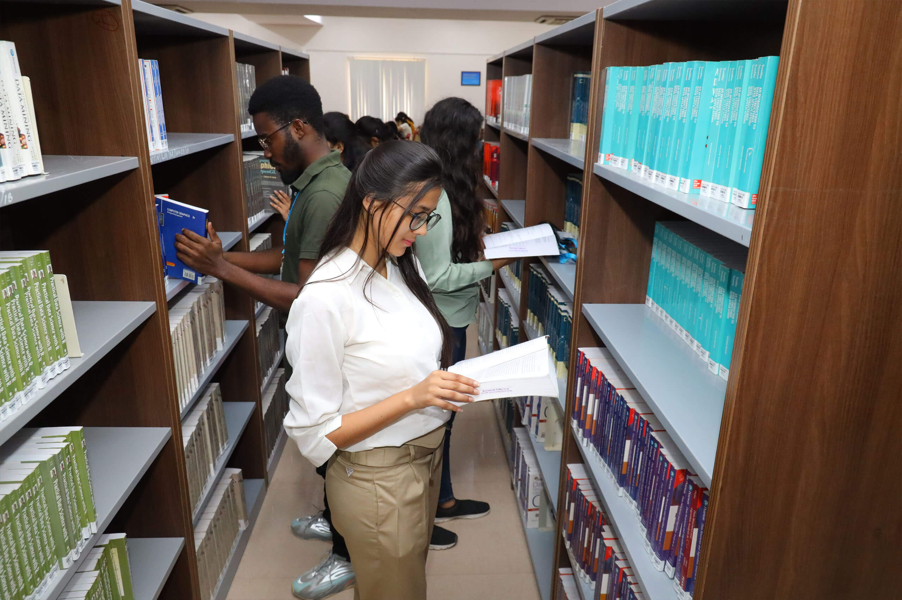

PHD law: Ph.D. Programme Overview: The
Ph.D. programme at VIT-AP School of Law (VSL)
is designed to prepare the graduates for careers as legal scholars and teachers through a doctoral
programme aimed...
Know More

VSL - 5 years integrated BBA., LL.B.(Hons.) Overview:
VIT-AP offers a 5-year integrated Bachelor of Business Administration and Bachelor of Laws (BBA.,LL.B
(Hons)) is a dual degree programme...
Know More

B.tech-CSE: The Computer Science and Engineering programme at VIT-AP is a unique blend of
hardware and software, allowing students to gain knowledge about the concepts that...
Read More
B.tech CSBS: To address the growing need of engineering talent with skills in digital technology, TCS, in partnership with leading academicians across India, has designed a 4 years undergraduate...
Read More

Dual Degree Public Services: Merit Scholarships Dual Degree [B. A. – Public Services], [M. A. – Public Services] (with integrated coaching for UPSC) Start Period: Academic Year 2023-24
Read More

M.Sc. Chemistry: PG Programme: M.Sc. Chemistry in Collaboration with MKCI Pvt. Ltd. Merit Scholarships for PG Programmes Programmes Offered: ✥ M.Sc. Chemistry✥ M.Sc. Chemistry-Specialization...
Read More

M.Sc. Data Science: M.Sc. Data Science in Collaboration with Binghamton University, USA & QpiAI, India Pvt. Ltd. Duration of the Programme: 2yr Academic Year 2023-24 Eligibility: Undergraduate degrees such...
Read More